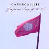

Celtic Lyrics Corner > Artists & Groups > Capercaillie > Glenfinnan > Oran Do Loch Iall
|  | Oran Do Loch Iall |
| Credits : | Alasdair Cameron |
| Appears On : | Glenfinnan |
| Language : | Gàidhlig (Scottish Gaelic) |
| Lyrics : | English Translation : |
| O deoch-slainte mo ghaisgich | Here's health to my hero |
| 'S coir a faicinn 'ga lionadh | 'Tis right full to fill it |
| Us a cumail an cleachdadh | And to keep it in practice |
| Mar fasan da rireadh | As truly a fashion |
| H-uile fear leis nach ait i | Every man who dislikes it |
| F'agam esan an iotadh | I shall leave him a-thirsting |
| Bhith 'ga h-ol gur h-e b'annsa | To drink it were pleasant |
| Ma's branndaidh no fion i | In wine or in brandy |
| Gur e b'annsa, gur e b'annsa | So pleasant, so pleasant |
| 'S a Dhomhnuill oig Abraich | Young Donald from Lochaber |
| Do shlainte gum faic mi mun'n cuairt i | Thy health may I see drunk around me |
| An t-og firinneach smachdail | The youth faithful, commanding |
| Nach robh tais an am cruadail | And in danger unflinching |
| 'S beag iongnadh an t-ardan | Little wonder that pride shines |
| Bhith gu h-ard ann ad ghruaidhean | So high in thy visage |
| 'S a liuthad fuil rioghail | While so much blood royal |
| Tha sioladh mu d'ghuillibh | Does run by thy shoulders |
| 'S a liuthad fuil, 's a liuthad fuil | So much blood, so much blood |
| 'S dearbhadh air sin Sliabh a' Chlamhain | It was shown at Gladsmuir |
| Gun d'fhuair sibh barrachd an cruadal | Thou excelledst in valor |
| Thug thu an duthchas o d'sheanair | Thy spirit tookst from thy grandsire |
| B'ard-cheannard air sluagh e | Who of hosts was commander |
| Tha mo dhuil anns an Trianaid | And my hope's in the Trinity |
| Ma's ni thig gu buaidh e | If this thing came to triumph |
| Gum faic mi thu ad Dhiuca | I'll see thee win a Dukedom |
| An deidh an crun ud a bhuannachd | When that crown has been gained |
| 'Is 'nad Dhiuc', 'is 'nad Dhiuc' | As a duke, as a duke |
| Cha b'e siubhal na slainte | Nor did that coward rabble |
| Bh'aig a' ghraisg us a'teicheadh | Take to fleeing in safety |
| 'S iomadh cota ruadh maduir | For many a red-coat |
| Bh'anns an araich gun leithcheann | Lay on the field headless |
| Agus slinnein o'n ghualainn | And arms from their shoulders |
| Agus cnuac chaidh a leagail | And crowns off were stricken |
| Le luths nam fear laidir | By the keen, mighty heroes |
| Ghabh an t-ardan gun eagal | Haughty, and fearless |
| Le luths nam fear, le luths nam fear... | By the strength of men, by the strength of men... |